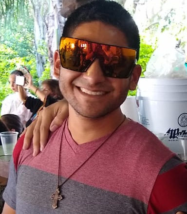
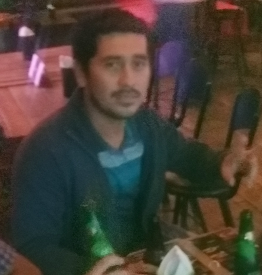
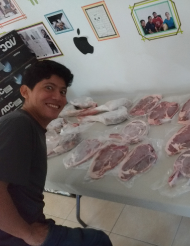
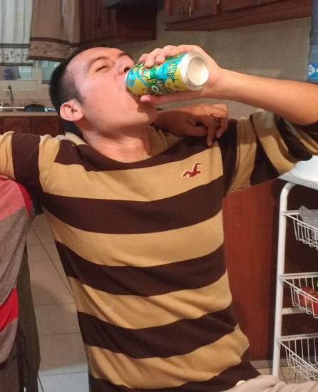

Nuestro equipo:
TODOS

| Jefe de chef's | chef colima | chef - tabasqueño |
|---|---|---|
|

Especialidad: huevos con jamon |
Especialidad: huevos de Manuel |

Especialidad: huevos shotos |
chef local | "sh" del norte | parrillero estrella (do) |
|
Especialidad: huevos con rana |
Especialidad: huevos con "sh" |

Especialidad: Ruteros de camiones |
|

Especialidad: Saca borrachos |